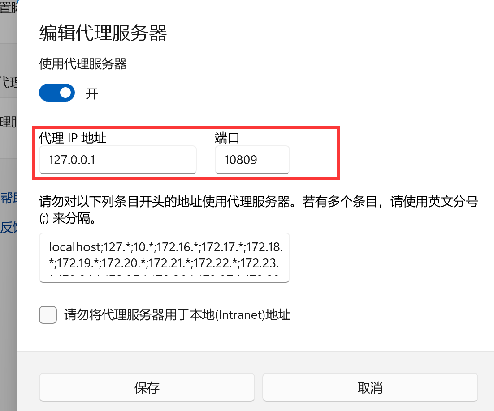

burpsuite在代理环境下的问题
当我们使用Burpsuite对内网或国外网络做测试时都会挂上代理，但bp本身就是通过代理进行测试的，若什么都不设置是一定无法正常工作的。
正常使用bp的流量流向：通过浏览器发起的http请求->bp代理地址->重放到目标服务器的http端口服务；
正常使用代理的流量流向：主机发起网络请求->代理服务器->目标服务器；
故若在代理环境下使用bp抓包，放包实则是没有经过代理服务器，需要我们再设置一个上层代理。进入bp的设置界面，

其配置可以按照系统代理的配置进行设置

设置完即可正常工作
本博客所有文章除特别声明外，均采用 CC BY-NC-SA 4.0 许可协议。转载请注明来自 Mlins！